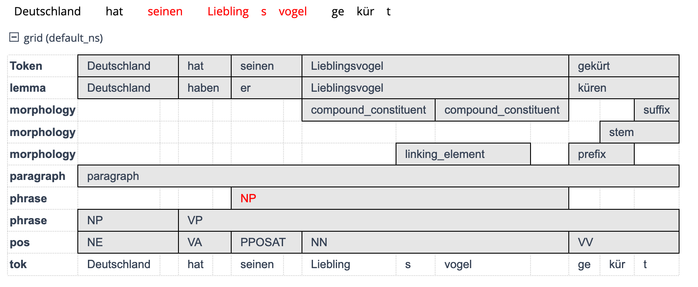

Annotationsebenen
Annotationsebenen
Jetzt wissen Sie schon, was man bei der Annotation von sprachlichen Daten grundsätzlich beachten sollte. Bevor wir dazu kommen, wie ein Annotationsschema und Annotationsrichtlinien aufgebaut sein sollten und wie Sie das richtige Annotationstool für Ihr Projekt finden, möchten Sie sicher wissen, mit welchen linguistischen Informationen sprachliche Daten überhaupt angereichert werden können. Damit sind wir bei unterschiedlichen Annotationsebenen. Jede sprachliche Äußerung, die Sie in einem Korpus finden können, verfügt über grammatische Eigenschaften hinsichtlich der Morphologie einzelner Wörter, der syntaktischen Strukturen des Satzes, aber auch die semantische und pragmatische Ebene sollte natürlich nicht übersehen werden. Diese einzelnen Charakteristika einer sprachlichen Äußerung stellen unterschiedliche Annotationsebenen dar, die Sie potenziell annotieren könnten. Wie weiter oben schon gesagt, macht es in der Regel aber keinen Sinn, einfach auf gut Glück alle möglichen Ebenen zu annotieren – in der Forschungspraxis sollte die Annotation von einer konkreten Fragestellung motiviert sein. Wenn wir diesen Aspekt im Folgenden ausblenden, dann nur, um Ihnen die große Bandbreite an prinzipiell möglichen Annotationen aufzuzeigen.
Verdeutlichen wir uns das Ganze an einem Beispiel. Gegeben sei der folgende kleine Textauszug:
Deutschland hat seinen Lieblingsvogel gekürt: Das Rotkehlchen ist der “Vogel des Jahres” 2021, wie der Naturschutzbund Deutschland (NABU) und der bayerische Landesbund für Vogelschutz (LBV) bekanntgaben. Damit setzte sich der Singvogel gegen die anderen neun Kandidaten durch, die zur Wahl standen: Rauchschwalbe, Kiebitz, Feldlerche, Stadttaube, Haussperling, Blaumeise, Eisvogel, Goldregenpfeifer und Amsel. (https://www.tagesschau.de/inland/gesellschaft/vogel-des-jahres-105.html)
Dieser Textauszug lässt sich nun nach den unterschiedlichen Annotationsebenen, die wir eben gesehen haben, annotieren. Die folgende Grafik zeigt exemplarisch, wie das aussehen kann.
Im Such- und Visualisierungstool ANNIS, mit dem dieser Screenshot gemacht wurde, sehen wir die Annotationen buchstäblich auf unterschiedlichen Ebenen. Auf der Lemma-Ebene sind die Grundformen der einzelnen Wörter angegeben, auf der POS-Ebene die Wortarten, auf der morphology-Ebene die Eigenschaften der einzelnen Morpheme (d.h. ob es sich um Stämme, Präfixe, Suffixe, Kompositionsglieder etc. handelt). Und auf der phrase-Ebene schließlich wurde eine sehr einfache Phrasenstrukturanalyse vorgenommen.
Halten wir also fest: Linguistische Annotationen können wir auf ganz unterschiedlichen Ebenen vornehmen, von der Morphosyntax und Syntax bis hin zur Semantik und sogar zur Pragmatik. Gehen wir diese vier Bereiche nun im Einzelnen durch.
Morphosyntax
Die kleinsten sprachlichen Einheiten, für die Annotationen vorgenommen werden, sind i.d.R. Wörter und deren innere Struktur. In der Sprachwissenschaft untersucht man diese in der Morphologie, die einen der beiden wesentlichen Teilbereiche der Grammatik darstellt. Da Wörter jedoch oft auch Eigenschaften aufweisen, die durch ihre Stellung im Satz begründet ist, spielt die Syntax, der zweite wesentliche Teilbereich der Grammatik, eine nicht zu unterschätzende Rolle. Bei der Annotation auf der Ebene von Wörtern kann man deshalb zusammenfassend von der morphosyntaktischen Ebene sprechen.
Die wichtigste morphosyntaktische Annotation ist die Zuweisung von Wortarten zu den einzelnen Wörtern eines Textes. Für jedes Wort wird also bestimmt, welcher Wortart es angehört und diese Information wird gemeinsam mit dem Originaltext abgespeichert. Im englischsprachigen Raum lautet die Bezeichnung für Wortart part of speech (POS), man spricht für die Annotation von Wortarten deshalb oft auch von Part-of-Speech-Tagging oder POS-Tagging.
Tags und Tagsets
Morphosyntaktische Annotationen werden heutzutage in den wenigsten Fällen manuell, sondern in der Regel automatisch durch spezielle Software – sogenannte Tagger bzw. Parser – vorgenommen. Der Begriff Tagger leitet sich von dem englischen Begriff Tag ab, den Sie in etwa mit ‘Etikett’ übersetzen können. Bei einer morphosyntaktischen Annotation bekommt jedes Wort entsprechend einen oder mehrere Tags zugewiesen, die (im Falle von POS-Tagging) sozusagen die ‘Wortartenetiketten’ für jedes Wort darstellen. Viele öffentlich zugängliche Korpora sind bereits morphosyntaktisch mit Wortarteninformationen annotiert, sodass Sie in Ihrer Suchanfrage davon Gebrauch machen und gezielt nach Wortarten suchen können.
Wie Sie wahrscheinlich wissen, gibt es in der Sprachwissenschaft sehr unterschiedliche Vorstellungen darüber, wie viele Wortarten existieren und wie man sie auseinanderhalten soll. Vor diesem Problem steht grundsätzlich auch jedes Vorhaben einer morphosyntaktischen Annotation, denn um den einzelnen Wörtern eines Textes Wortarten zuweisen zu können, müssen Sie erst einmal festlegen, welche Wortarten-Tags Sie dabei vergeben können. Sie brauchen also eine Sammlung potenzieller Tags, die Sie vor dem Beginn der Annotation definieren müssen. Eine solche Sammlung nennt man ein Tagset.
Stuttgart-Tübingen-Tagset (STTS)
Doch keine Sorge: Sie müssen sich nicht immer selbst ein Tagset zusammenstellen. Für die morphosyntaktische Annotation von Wortarten hat sich im deutschsprachigen Raum das Stuttgart-Tübingen-Tagset (STTS) durchgesetzt. Das sogenannte kleine Tagset des STTS umfasst 54 Tags, die neben der Wortart auch Informationen über die syntaktische Distribution eines Wortes (z.B. Präposition oder Postposition), die grammatische Funktion (z.B. attributiv oder prädikativ verwendetes Adjektiv), morphologische Eigenschaften (z.B. finites Verb vs. Infinitform) und semantische Eigenschaften (z.B. Nomen als Gattungsbegriff vs. Eigenname) umfasst.
Wenn Sie sich für die Details der einzelnen Tagsets des STTS interessieren (neben dem kleinen gibt es natürlich auch ein großes Tagset), seien Ihnen die Annotationsrichtlinien, die Sie online unter https://www.ims.uni-stuttgart.de/documents/ressourcen/lexika/tagsets/stts-1999.pdf einsehen können, ans Herz gelegt.
Um auf unseren Beispiel-Textauszug zurückzukommen: Wie kann eine morphosyntaktische Annotation mittels des STTS aussehen? Den einzelnen Wörtern des ersten Satzes Deutschland hat seinen Lieblingsvogel gekürt ließen sich beispielsweise die folgenden STTS-Tags zuordnen:
Deutschland/NE hat/VAFIN seinen/PPOSAT Lieblingsvogel/NN gekürt/VVPP
Die Abkürzungen, die Sie hier den einzelnen Wörtern angehängt sehen, sind einzelne Wortarten-Tags: NE steht für ein Nomen als Eigenname, VAFIN für ein finites Auxiliarverb (hier: ein Hilfsverb), PPOSAT steht für ein attributiv gebrauchtes Possessivpronomen (manchmal auch Possessivartikel genannt), NN steht für ein normales Nomen, also ein Nomen als Gattungsbegriff, und VVPP steht für ein nicht-flektiertes Partizip Perfekt.
Mehr als Wortarten
Auf morphosyntaktischer Ebene werden allerdings nicht nur Wortarten annotiert. Die meisten automatischen Tagger können noch mehr: Sie führen Wörter in der Regel auf ihre Grundform zurück, was man als Lemmatisierung bezeichnet. Nur so können Sie sich z.B. alle Wortformen eines Verbs anzeigen lassen. Wenn Sie nach dem Verb küren suchen, ermöglicht es Ihnen die Lemmatisierung, auch Formen wir kürt, kürte, kürten oder gekürt zu finden, ohne dass Sie dafür einzelne Suchanfragen stellen müssen.
Wie Sie an unserem Beispiel für das STTS gesehen haben, werden dort aber auch Informationen wie die Finitheit eines Verbs (ob es also finit oder infinit vorkommt) oder bestimmte semantische Klassen von Nomen (Gattungsbegriffe vs. Eigennamen) annotiert. Damit ist bereits die Annotationsebene der Semantik berührt, zu der wir noch kommen.
Wenn Sie sich die Annotationsrichtlinien des STTS ansehen, fällt Ihnen sicher auf, dass das Tagset wesentlich mehr Tags umfasst als Sie noch aus der Wortarteneinteilung Ihres Grammatikseminars kennen. Das liegt nicht nur daran, dass das STTS, wie gerade gesehen, einige Worartenkategorien feiner untergliedert (z.B. bei Nomen zwischen Gattungsbegriffen und Eigennamen unterscheidet, bei Verben nach ihrer Finitheit), sondern dass das es auch Satzzeichen und Sonderzeichen umfasst, die Sie natürliche ebenso in eine Korpusrecherche einbeziehen können.
Syntax
Verlassen wir nun die Ebene einzelner Wörter und wenden wir uns der Struktur von Sätzen zu, die man in der Grammatik im Teilgebiet der Syntax untersucht. Bei der syntaktischen Annotation müssen wir unterscheiden zwischen der Annotation einzelner syntaktischer Phänomene einerseits und der syntaktischen Annotation eines gesamten Korpus andererseits. Da wir uns in diesem Tutorial auf manuelle Annotation konzentrieren wollen, streifen wir den letztgenannten Aspekt nur kurz, denn ein ganzes Korpus manuell mit syntaktischer Annotation zu versehen, wäre selbst bei kleineren Korpora zu aufwändig und dank vorhandener computerlinguistischer Tools auch gar nicht nötig (zumindest solange wir mit gut dokumentierten Sprachen wie dem Deutschen arbeiten).
Wie Sie vielleicht noch aus Ihrer Grammatik-Einführung wissen, werden syntaktische Strukturen häufig als Baumdiagramme (oder kurz: Bäume) dargestellt. Syntaktisch annotierte Korpora nennt man deshalb auch Baumbanken (von engl. treebanks). Je nachdem, wie man beim Aufbau eines Syntaxbaums vorgeht, unterscheidet man zwischen Dependenz und Konstituenz. Eine Dependenzstruktur geht davon aus, dass alle Elemente in einem Satz von einem einzigen Element abhängen (Dependenz bedeutet entsprechend ‘Abhängigkeit’). In den meisten Fällen ist dieses Element das Verb: Eine dependenzgrammatische Theorie, die Verben in den Vordergrund stellt, ist die Valenztheorie. In einer Dependenzstruktur ist das Verb das sogenannte Regens, alle von ihm abhängigen Elemente nennt man Dependentien.
Bei einer Konstituentenstruktur steht nun nicht die Abhängigkeit unterschiedlicher Dependentien von einem Regens im Vordergrund, sondern die hierarchische, lineare Struktur der einzelnen syntaktischen Konstituenten eines Satzes. Diese Konstituenten werden in der Grammatik meist in Form von Phrasen beschrieben, also als Nominalphrasen (NP), Verbalphrasen (VP), Präpositionalphrasen (PP) usw. Während bei einer Dependenzstruktur der oberste Knoten eines Baumes das Verb (das Regens) ist, ist das bei einer Konstituentenstruktur der ganze Satz (abgekürzt: S). Ein Korpus, das syntaktisch nach Dependenzstrukturen annotiert ist, ist die Hamburg Dependency Treebank. Eine nach Konstituentenstrukturen annotierte Baumbank ist das TIGER-Korpus.
Syntaktische Annotation in der Praxis
Baumbanken eignen sich gut zur korpusbasierten Untersuchung syntaktischer Fragestellungen. Allerdings ist es in den meisten Fällen weder notwendig noch zielführend, ein komplettes eigenes Korpus mit Konstituenten- oder Dependenzannotation zu versehen. Gerade im Falle von Seminar- und Abschlussarbeiten dürfte eine viel gängigere praktische Herausforderung die sein, konkrete syntaktische Phänomene zu annotieren. So könnte eine mögliche diachrone Fragestellung sein, wie sich die Stellung des Genitivs diachron verändert hat. Insgesamt lässt sich hier nämlich eine Tendenz von Prästellung zu Poststellung beobachten (meines Vaters Haus > das Haus meines Vaters), die allerdings abhängig von verschiedenen Variablen sehr unterschiedlich ausfällt: So ist bei einigen Eigennamentypen die Prästellung noch klar die gängigere Option (Peters Auto – das Auto Peters klingt mindestens sehr formell, wenn nicht sogar äußerst merkwürdig; anders z.B. bei Ereignisnamen: die Folgen des Zweiten Weltkriegs, nicht ?des Zweiten Weltkriegs Folgen).
Nehmen wir an, wir haben eine Konkordanz, die bereits alle Genitiv-NPs aus einem Korpus enthält, so können wir die einzelnen Belege in der Konkordanz zunächst einmal einfach daraufhin annotieren, ob es sich um einen Beleg für Prä- oder für Poststellung handelt.
| Beleg | Stellung |
|---|---|
| des Vaters Haus | Prästellung |
| das Auto der Kanzlerin | Poststellung |
Je nachdem, welche Hypothesen wir darüber haben, welche Faktoren die Genitivstellung beeinflussen, können wir weitere syntaktische und/oder semantische Annotationskriterien ansetzen, für die wir dann in der Konkordanz neue Annotationsspalten anlegen. Für die einzelnen Annotationskategorien gilt, dass sie eine Analysedimension abbilden sollten. Analog zum “Tidy Data”-Prinzip, das wir bereits kennengelernt haben, könnten wir hier vom “Tidy Categories” Prinzip sprechen: 1 Annotationskategorie = 1 Analysedimension.
Das mag trivial klingen, in der Praxis kommt es aber durchaus vor, dass mehrere Analysedimensionen in einer Kategorie vermischt werden. Das wäre beispielsweise dann der Fall, wenn ich semantische Rollen (Agens, Patiens etc.) und syntaktische Funktionen (Subjekt, Objekt usw.) auf der gleichen Annotationsebene (hier also: in der gleichen Annotationsspalte) annotieren würde. Diese beiden Kategorien korrelieren zwar oft (Agens ist häufig Subjekt, Patiens häufig Objekt: BrutusAgens, Subjekt tötet CäsarPatiens, Objekt), aber eben nicht immer (CäsarPatiens, Subjekt wird von BrutusAgens, Objekt getötet).
In anderen Fällen könnte es beispielsweise relevant sein, ob ein Phänomen in einem Haupt- oder in einem Nebensatz auftritt. So lässt sich zeigen, dass z.B. die Alternation zwischen futurischem Präsens (Ich gehe morgen ins Kino) und werden + Infinitiv (ich werde morgen ins Kino gehen) vom Satztyp abhängt. Die scheinbar so einfache Unterscheidung von Haupt- und Nebensatz bringt aber viele Folgefragen mit sich und erfordert die Ausarbeitung guter Annotationskriterien, da z.B. entschieden werden muss, wie man z.B. mit Grenzfällen wie Weil sie gendert: Zuschauer sind wütend auf heute-Moderatorin Petra Gerster (Quelle ) umgeht.
Auch bei der Annotation syntaktischer Kategorien kommt es also darauf an, Fragestellungen gut zu operationalisieren und diese Operationalisierung vor allem nachvollziehbar zu dokumentieren.
Semantik
Während morphosyntaktische und syntaktische Annotationen zu einem großen Teil durch Parser und Tagger übernommen werden können und nicht mehr manuell durchgeführt werden müssen, ist dies auf der Ebene der Semantik anders. Zwar existieren zahlreiche Forschungen für die automatische semantische Annotation von Korpora, eine wirklich verlässliche und auf die eigene Forschungsfrage bezogene semantische Annotation kann jedoch nach wie vor nur manuell erfolgen.
Gerade weil morphosyntaktische und syntaktische Annotationen in den meisten öffentlich verfügbaren Korpora bereits implementiert sind, sind semantische Annotationen (neben pragmatischen) für die eigene Annotationsarbeit vermutlich am interessantesten. So vielfältig wie die Bedeutungen von Wörtern sein können, so vielfältig können auch die Arten semantischer Annotationen sein. Es versteht sich von selbst, dass es sehr stark von Ihrer Forschungsfrage abhängt, welche semantischen Annotationen für Sie relevant sind. Wir können Ihnen in diesem Kapitel deshalb nur einige wenige Vorschläge und Prinzipien aufzeigen, an denen Sie sich orientieren können.
Wie schon bei den grammatischen Annotationsebenen der Morphosyntax und Syntax kann man auch bei semantischen Annotationen danach unterscheiden, ob sie sich auf einzelne Wörter oder ganze Sätze beziehen. Annotationen, die über einzelne Sätze hinausgehen, kann man bei pragmatisch orientierten Forschungsfragen vornehmen. Dazu kommen wir später.
Semantik auf Wortebene: Von lexikalischen Bedeutungen zu Metaphern
So wie man die Wortarten einzelner Wörter annotieren kann, lassen sich diesen Wörtern auch ihre lexikalischen Bedeutungen (Wortbedeutungen) zuordnen. Lexikalische Bedeutungen zu beschreiben ist alles andere als ein einfaches Unterfangen, deswegen lohnt es sich, bei der Annotation auf vorhandene Ressourcen zurückzugreifen, in denen Sie lexikalische Bedeutungen nachschlagen können. Solche Ressourcen sind Wörterbücher.
Eine nützliche Quelle für die lexikalischen Bedeutungen von Wörtern sind die unter dem Dach des Digitalen Wörterbuchs der Deutschen Sprache (DWDS) zusammengetragenen Wörterbücher, die Sie online durchsuchen können. Blicken wir dafür noch einmal in unseren Beispieltextauszug, genauer auf den folgenden Satz:
Damit setzte sich der Singvogel gegen die anderen neun Kandidaten durch, die zur Wahl standen: Rauchschwalbe, Kiebitz, Feldlerche, Stadttaube, Haussperling, Blaumeise, Eisvogel, Goldregenpfeifer und Amsel.
Die Folgenden Wörter interessieren uns besonders: durchsetzen, Kandidat und Wahl. Für das Verb durchsetzen finden wir im DWDS die Bedeutung ‘etw. trotz Widerstandes erreichen, zur Geltung bringen’, also durchsetzen im Sinne von der Lehrer musste sich in der Klasse durchsetzen. Diese Bedeutung ist in unserem Beispieltextauszug aber offensichtlich nicht gemeint. Dazu gleich mehr.
Versuchen wir es mit dem Nomen Wahl. Hier haben wir mehr Glück und finden u.a. die Bedeutung ‘Abstimmung, durch die eine Person in ein Amt, in eine Funktion oder durch die ein Gremium, eine Vertretungskörperschaft berufen wird’. Mit etwas Fantasie können wir diese Bedeutung durchaus auf die Wahl des Lieblingsvogels in Deutschland, um die es in unserem Beispieltext geht, anwenden. Ideal ist das aber sicher nicht. Auch darauf kommen wir gleich zurück.
Jetzt noch das Nomen Kandidat. Hier finden wir u.a. die Bedeutung ‘Bewerber und Anwärter’, genauer: ‘jmd., der für eine Wahl nominiert worden ist’. Auch hierfür brauchen wir etwas Fantasie, damit diese Bedeutung passt.
Die Bedeutungsparaphrasen, die Sie im DWDS finden, können eine gute Grundlage für die semantische Annotation auf Wortebene darstellen. Sie sind insbesondere dann hilfreich, wenn Sie überprüfen wollen, ob für bestimmte Wörter noch weitere Bedeutungen auffindbar sind, die über diejenigen im DWDS dokumentierten hinausgehen. Sollten Sie für bestimmte Wörter keine oder keine passenden lexikalischen Bedeutungen finden können, ist das ein Anzeichen dafür, dass hier Bedeutungen vorliegen, die (noch) nicht in einem Wörterbuch wie dem DWDS erfasst sind.
Damit nochmal zurück zu unseren Beispielen. Dass die Bedeutungsparaphrasen im DWDS nicht völlig zufriedenstellend auf unseren Beispieltextauszug anwendbar sind, liegt offensichtlich daran, dass zumindest die Wörter durchsetzen und Wahl, zu gewissen Teilen aber auch Kandidat, nicht im wörtlichen Sinne gebraucht werden. Es handelt sich um Metaphern. Wahrscheinlich verbinden Sie das Verb durchsetzen und auch das Nomen Kandidat eher mit einem ‘Spiel’ als mit einer politischen oder andersartigen ‘Wahl’. Damit würden Sie gar nicht so falsch liegen. Im Sinne der Theorie der konzeptuellen Metaphern von Lakoff/Johnson (1980) könnte man hier eine konzeptuelle Metapher wie EINE WAHL IST EIN SPIEL annehmen (die Schreibung in Großbuchstaben ist eine Konvention dieser Theorie). Wie für lexikalische Bedeutungen gibt es auch für solche konzeptuellen Metaphern eine Ressource, in der Sie sie nachschlagen können, nämlich das für das Englische entwickelte MetaNet. Dort finden wir tatsächlich eine konzeptuelle Metapher ELECTION IS A GAME, die sich durchaus auf unser Beispiel anwenden lässt und die Bedeutungen der drei Wörter sicher besser umreißt als das DWDS.
Konzeptuelle Metaphern sind allerdings nicht ausschließlich Phänomene auf Wortebene, sie erstrecken sich auch darüber hinaus hin zu ganzen Sätzen. Damit sind wir bei der nächsten semantischen Annotationsebene.
Von Wortbedeutungen zur Satzsemantik: FrameNet
Ein Beispiel für eine semantische Annotation ist die Analyse von sogenannten Frames, wie sie im FrameNet-Projekt durchgeführt wird. Grob gesagt stellt ein Frame die Grundlage für die lexikalische Bedeutung eines Wortes dar. Wörter, deren lexikalische Bedeutungen ähnlich sind, rufen also denselben Frame auf, man sagt: sie evozieren denselben Frame. Frames beziehen sich jedoch nicht nur auf einzelne Wörter, sondern treffen zugleich Aussagen über die semantische Struktur von Sätzen, da sie die weiteren Elemente, die mit einem Wort gemeinsam im Satz auftreten können, semantisch bestimmen. Frames stehen damit an der Schwelle zwischen Wortbedeutungen (lexikalischer Semantik) und Satzbedeutungen (Satzsemantik).
Das Wort, das einen Frame evoziert, nennt man Target oder auch lexikalische Einheit (LE). Der Frame gibt nun die weiteren Elemente im Satz vor und bestimmt diese semantisch. Diese werden bei FrameNet Frame-Elemente (FE) genannt. Ist das Target ein Verb, wird damit also gewissermaßen dessen semantische Valenz analysiert.
In unserem Beispielsatz ruft das Verb küren den Frame Choosing auf. Die Nominalphrase Deutschland ist dann als Ausdruck des FE Cognizer zu identifizieren, während die Nominalphrase seinen Lieblingsvogel das FE Chosen darstellt. Zusätzlich dazu kann man noch das Verb, hier also küren, als Target annotieren. Das Ergebnis sieht dann so aus:
[Cognizer Deutschland] hat [Chosen seinen Lieblingsvogel] [Target gekürt]
Eine solche frame-semantische Annotation ist natürlich nur ein Beispiel für eine semantische Annotation auf Satzebene. Je nach Ihrem Untersuchungsinteresse kann es noch ganz andere Anwendungen geben. Ihrer Fantasie sind hier (fast) keine Grenzen gesetzt.
Pragmatik
Bisher haben wir Annotationen vor allem auf der Ebene einzelner Wörter oder Sätze betrachtet. Wir können jedoch auch über die Satzebene hinausgehen und satzübergreifend annotieren. Ein Beispiel dafür sind Anaphern und Koreferenzen, die man besonders im linguistischen Teilgebiet der Pragmatik untersucht, aber auch die Textlinguistik berührt.
Sehen wir uns dazu unseren Beispieltextauszug noch einmal an, genauer: die ersten beiden Sätze.
hat seinen Lieblingsvogel gekürt: Das Rotkehlchen ist der “Vogel des Jahres” 2021, wie der Naturschutzbund Deutschland (NABU) und der bayerische Landesbund für Vogelschutz (LBV) bekanntgaben.
Sie werden vermutlich keine Probleme haben, zu verstehen, dass mit dem Ausdruck Lieblingsvogel hier das Rotkehlchen gemeint ist. Lieblingsvogel bezieht sich also auf Rotkehlchen. Ein solches Bezugswort, auf das innerhalb eines Satzes oder Textes Bezug genommen wird, nennt man auch Antezedens. Beide Ausdrücke beziehen sich aber auf dasselbe außersprachliche Element, man sagt: Sie haben dieselbe Referenz bzw. sind koreferent. Da das Antezedens hier im Text erst nach dem bezugnehmenden Wort kommt, kann man Letzteres statt Anapher auch Katapher nennen. In der Textlinguistik spricht man hier auch von Substitution.
Obwohl für uns menschliche Leser*innen diese Koreferenzen vollkommen natürlich sind (und vor allem in journalistischen Texten im Überfluss vorkommen), haben automatische Tagger durchaus Schwierigkeiten damit, sie zu erkennen.
Lesen wir den Beispieltextauszug weiter.
Damit setzte sich der Singvogel gegen die anderen neun Kandidaten durch, die zur Wahl standen: Rauchschwalbe, Kiebitz, Feldlerche, Stadttaube, Haussperling, Blaumeise, Eisvogel, Goldregenpfeifer und Amsel.
Auch hier dürfte Ihnen auffallen, dass sich der Ausdruck Singvogel ebenso auf Rotkehlchen bezieht. Auch hier liegt also eine Koreferenz vor. Doch damit nicht genug: Mit Singvogel wird zugleich eine Aussage über das außersprachliche Objekt Rotkehlchen vollzogen, nämlich dass es ein Singvogel ist. Eine solche Aussage nennt man Prädikation. Mit Singvogel wird hier also nicht nur Koreferenz hergestellt, sondern zugleich auch etwas ausgesagt, also prädiziert. Man kann das ein prädizierendes Bezugnehmen (von Polenz 2008: 125-126) nennen.
Wie Sie sehen, wird auf Rotkehlchen in unserem kurzen Beispieltextauszug also einmal mit Lieblingsvogel und einmal mit Singvogel Bezug genommen. Dieses Beispiel mag harmlos sein, die Annotationen von Koreferenzen ist aber gerade für die Untersuchung von öffentlichen Diskursen eine gewinnbringende sprachwissenschaftliche Methode. Denn wie auf ein außersprachliches Objekt oder einen Diskurs Bezug genommen wird, kann sehr deutlich die unterschiedlichen Positionen der einzelnen Diskursparteien offenbaren.